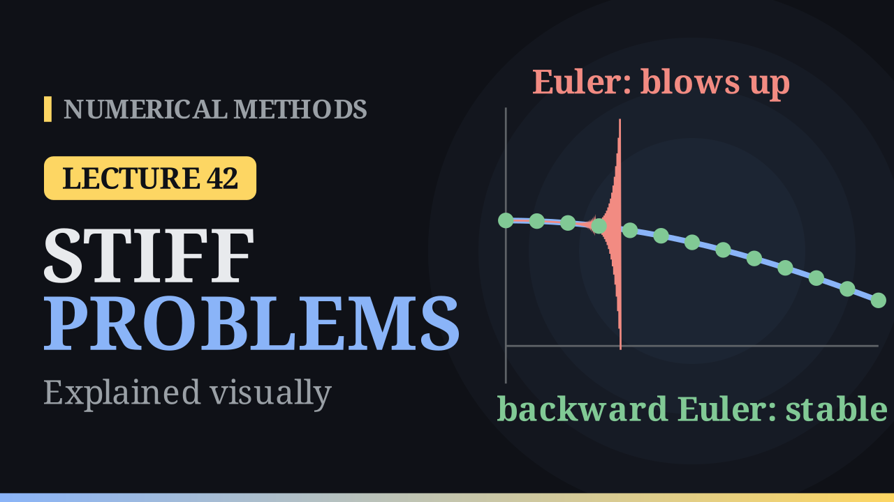

Lecture 42
A-Stability and Stiff Problems¶

Key results¶
- A-stability: a method is A-stable when the whole closed left half-plane \(\{z:\mathrm{Re}\,z\le0\}\) lies inside its region of absolute stability.
- Backward Euler: \(y_{n+1}=y_n+h\,f(t_{n+1},y_{n+1})\), an implicit method of order \(1\). On \(y'=\lambda y\) it gives \(G(z)=\frac{1}{1-z}\), stable for \(|1-z|\ge1\): outside the unit disk around \(1\). It is A-stable.
- Explicit methods have a polynomial \(G(z)\), so \(|G(z)|\to\infty\) for large \(|z|\): their regions are bounded and they are never A-stable.
- Stiff problems contain a rapidly decaying component (a \(\lambda\) with large negative real part), so an explicit method's step is set by stability (\(h\le2/|\lambda|\) for Euler), not by accuracy.
- Implicit steps solve \(g(Y)=Y-y_n-h\,f(t_{n+1},Y)=0\), by Newton's method \(Y\leftarrow Y-\frac{g(Y)}{1-h\,f_y(t_{n+1},Y)}\); for systems, a linear system with \(I-hJ\) at each Newton step.
- For \(y'=-1000\,(y-\cos t)\), \(y(0)=1\): Euler needs \(h\le0.002\) (more than \(5000\) steps to \(t=10\)); backward Euler with \(h=0.1\) takes \(100\) steps with largest error about \(5\times10^{-5}\).
A smooth solution that is hard to compute¶
Consider the problem from the notes
The right-hand side pulls \(y\) towards \(\cos t\) with a factor of \(1000\), so the solution simply follows the cosine: \(y(1)=0.5411\) while \(\cos1=0.5403\). Started off the curve, say at \(y(0)=2\), the solution drops onto the cosine within about \(0.005\) and then follows it. The exact solution
has two time scales: a fast component \(e^{-1000t}\), gone almost at once, and the slow \(\cos t\) that we want to follow.
Euler's method with \(h=0.1\), a step that would follow a cosine comfortably, gives \(1,\ 1,\ 0.500,\ 48.5,\ -4703,\ 465644\). Here \(z=h\lambda=-1000h\), and Euler is stable only for \(-2\le z\le0\), that is \(h\le0.002\). The limit is sharp: with \(h=0.0019\) (factor \(1+z=-0.9\)) Euler follows the cosine; with \(h=0.0021\) (factor \(-1.1\)) it looks fine for a while and then explodes near \(t\approx0.42\). To reach \(t=10\) Euler needs more than \(5000\) steps.
Stiffness¶
An initial value problem is called stiff when it contains a rapidly decaying component, a \(\lambda\) with large negative real part, so that for an explicit method the step size is dictated by stability rather than by the accuracy needed to follow the smooth solution. Chemical reactions with fast and slow rates, electrical circuits, heat flow on a fine grid and control systems all lead to stiff problems.
For a system \(\mathbf y'=A\mathbf y\) the role of \(\lambda\) is played by the eigenvalues of \(A\) (of the Jacobian for a nonlinear system), and every \(h\lambda_i\) must lie in the stability region. With eigenvalues \(-1\) and \(-1000\), the point \(-h\) leaves Euler's disk only at \(h=2\), but \(-1000h\) leaves it at \(h=0.002\): the fast component decides the step long after it has died out. The ratio \(1000\) of the eigenvalues measures the stiffness.
Backward Euler¶
Euler takes the slope at the old point. Backward Euler takes it at the new point:
Geometrically, \(y_{n+1}\) is the point at \(t_{n+1}\) whose own tangent, traced backwards, passes through \((t_n,y_n)\). Since \(y_{n+1}\) appears on both sides, the method is implicit: each step solves
The fixed-point iteration \(Y\leftarrow y_n+h\,f(t_{n+1},Y)\) converges only when \(hL<1\), which for a stiff problem (\(L=1000\)) brings the tiny step back. Newton's method (Lecture 4) is the robust choice:
started from \(y_n\) or a forward Euler prediction; two or three iterations usually suffice. For a system each Newton step solves a linear system with the matrix \(I-hJ\), by Gaussian elimination or an LU factorisation. Like forward Euler, backward Euler has order \(1\).
Example. Two steps with \(h=0.1\) for \(y'=t+y\), \(y(0)=1\). The equation is linear in \(y_{n+1}\):
so \(y_1=1.01/0.9=1.12222\) and \(y_2=(1.12222+0.02)/0.9=1.26914\), against the exact \(1.11034\) and \(1.24281\). Forward Euler (\(1.1\), \(1.22\)) lands below this growing solution and backward Euler above it, both with \(O(h)\) errors.
Stability of backward Euler¶
On \(y'=\lambda y\), backward Euler gives \(y_{n+1}=y_n+h\lambda\,y_{n+1}\), so
It is stable when \(\big|\frac{1}{1-z}\big|\le1\), that is \(|z-1|\ge1\): everything outside the unit disk around \(1\). Euler's region is the inside of the unit disk around \(-1\). Backward Euler's region contains the entire left half-plane, so backward Euler is A-stable: for every \(h>0\) and every \(\lambda\) with \(\mathrm{Re}\,\lambda\le0\) its values stay bounded, like the true solution.
No explicit Runge–Kutta method can be A-stable. Its \(G(z)\) is a polynomial (\(1+z\) for Euler, \(1+z+\frac{z^2}{2}\) for RK2, the degree-4 Taylor polynomial of \(e^z\) for RK4), and a non-constant polynomial grows without bound, so \(|G(z)|>1\) far enough along the negative real axis. Backward Euler's \(G(z)=\frac1{1-z}\) is rational and tends to \(0\) as \(z\to-\infty\).
Example. \(y'=-50y\), \(y(0)=1\), \(h=0.05\), so \(z=-2.5\). Euler multiplies by \(1-2.5=-1.5\) at every step; backward Euler divides by \(3.5\).
| \(t_n\) | Euler | backward Euler | exact \(e^{-50t_n}\) |
|---|---|---|---|
| 0.05 | −1.5 | 0.28571 | 0.08208 |
| 0.10 | 2.25 | 0.08163 | 0.00674 |
| 0.15 | −3.375 | 0.02332 | 0.00055 |
| 0.20 | 5.0625 | 0.00666 | 0.00005 |
Euler's values zigzag and grow without bound; backward Euler decays like the true solution, more slowly but with the right behaviour. With \(h=0.5\) (\(z=-25\)) Euler multiplies by \(-24\) and backward Euler by \(\frac1{26}\approx0.038\).
The stiff problem solved¶
Backward Euler for \(y'=-1000\,(y-\cos t)\) reads
With \(h=0.1\), \(100\) steps reach \(t=10\) with largest error about \(5\times10^{-5}\). Euler needs more than \(5000\) steps just to stay stable, and RK4, stable for \(z\ge-2.785\), about \(3591\) steps of four evaluations each. Each implicit step costs more, an equation to solve, but for stiff problems the number of steps drops by a factor of \(50\) to \(100\). For non-stiff problems the cheap explicit steps win; for stiff problems the implicit A-stable methods win.
A nonlinear step. For \(y'=-y^3\), \(y(0)=1\), one backward Euler step with \(h=1\) needs the root of \(Y+Y^3-1=0\). Newton from \(Y=1\) gives \(0.75\), \(0.686047\), \(0.682340\), \(0.682328\). The fixed-point iteration \(Y\leftarrow1-Y^3\) alternates between \(0\) and \(1\) forever. The exact value is \(y(1)=1/\sqrt3=0.577\); forward Euler with the same step gives \(1-1=0\), a solution that has stopped dead.
The trapezoidal rule¶
Averaging the slopes at both ends gives the trapezoidal rule (Crank–Nicolson), implicit and of order \(2\):
It is A-stable, with stability region exactly the left half-plane. But \(G(z)\to-1\) as \(z\to-\infty\): with \(z=-25\) it multiplies by \(-0.85\), so a fast component rings on with alternating sign, while backward Euler multiplies by \(0.038\) and damps it. For very stiff problems, methods that damp like backward Euler are preferred.
Algorithm (backward Euler with Newton)¶
- Input \(f\), \(f_y\), \(t_0\), \(y_0\), the step \(h\), the number of steps \(N\) and a tolerance.
- For \(n=0,1,\dots,N-1\): set \(t_{n+1}=t_n+h\); predict \(Y=y_n+h\,f(t_n,y_n)\); repeat \(d=\frac{Y-y_n-h\,f(t_{n+1},Y)}{1-h\,f_y(t_{n+1},Y)}\), \(Y\leftarrow Y-d\) until \(|d|\) is below the tolerance; set \(y_{n+1}=Y\).
- Return \(y_1,\dots,y_N\).
Comparison¶
| method | type | order | real stability interval | A-stable |
|---|---|---|---|---|
| Euler | explicit | 1 | \([-2,0]\) | no |
| RK2 | explicit | 2 | \([-2,0]\) | no |
| RK4 | explicit | 4 | \([-2.785,0]\) | no |
| backward Euler | implicit | 1 | \((-\infty,0]\) | yes |
| trapezoidal | implicit | 2 | \((-\infty,0]\) | yes |
Looking back over the course¶
This lecture completes the course. Root finding (bisection, secant, regula falsi, Newton, fixed-point iteration), computer arithmetic, linear systems (Gaussian elimination, pivoting, LU and Cholesky, norms and conditioning, Jacobi, Gauss–Seidel and SOR), eigenvalues by the power methods, least squares, interpolation, numerical integration and differential equations all come back here: a backward Euler step uses Newton's method and a linear solver, and Runge–Kutta methods are quadrature rules in disguise. The same few ideas run through every lecture: approximate, estimate the error, and keep the computation stable.